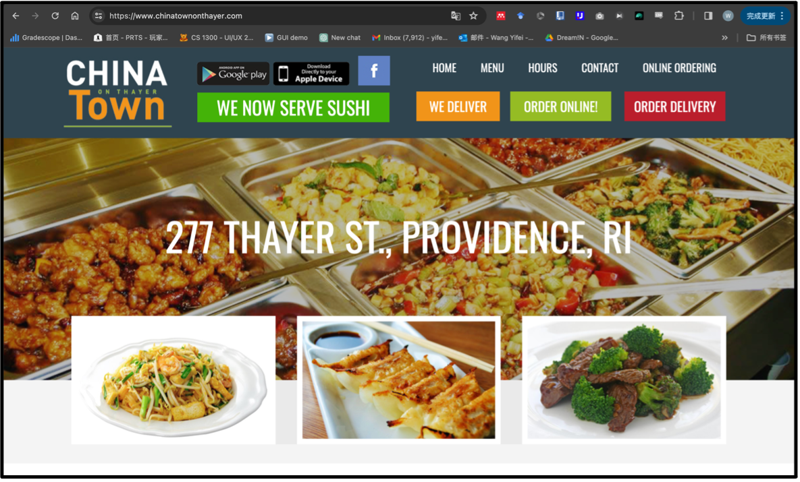
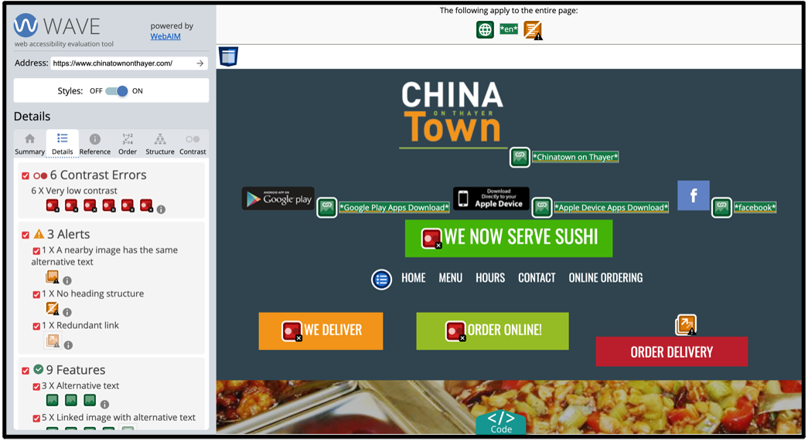
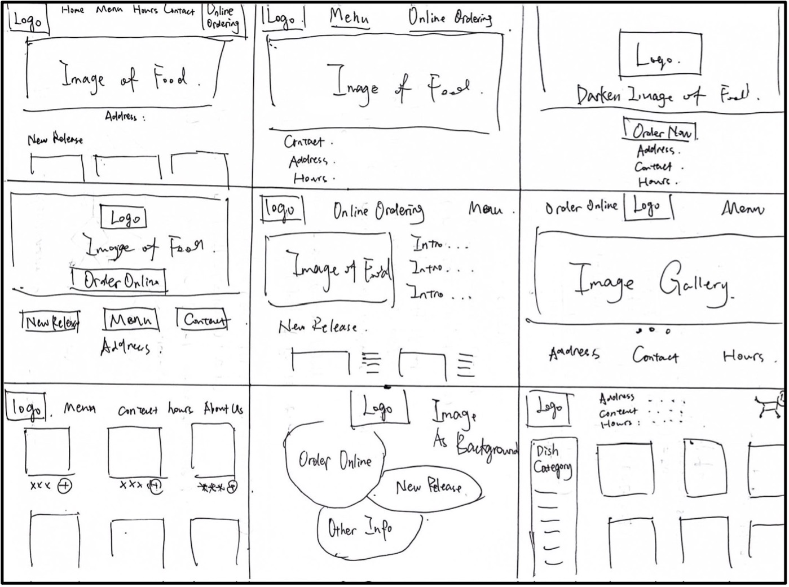
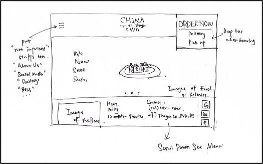
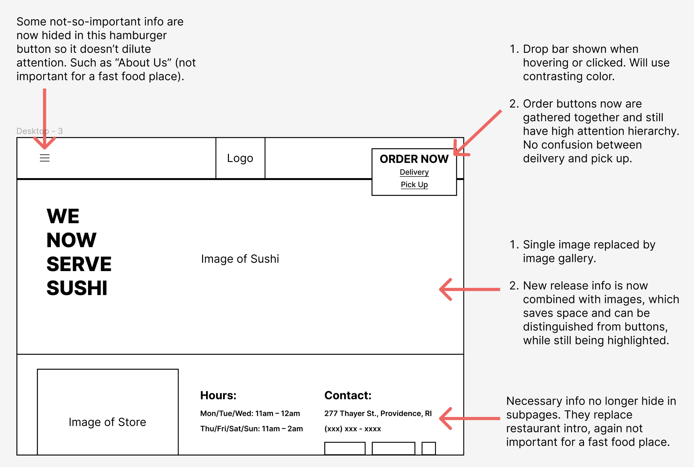
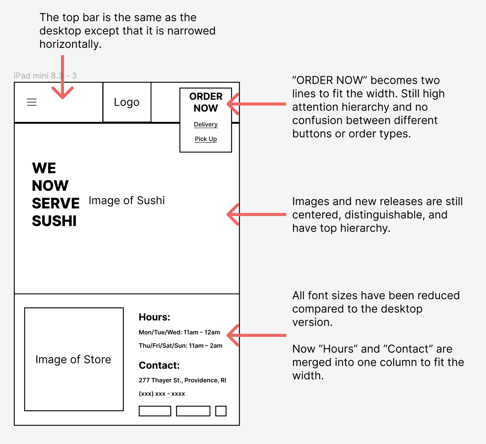
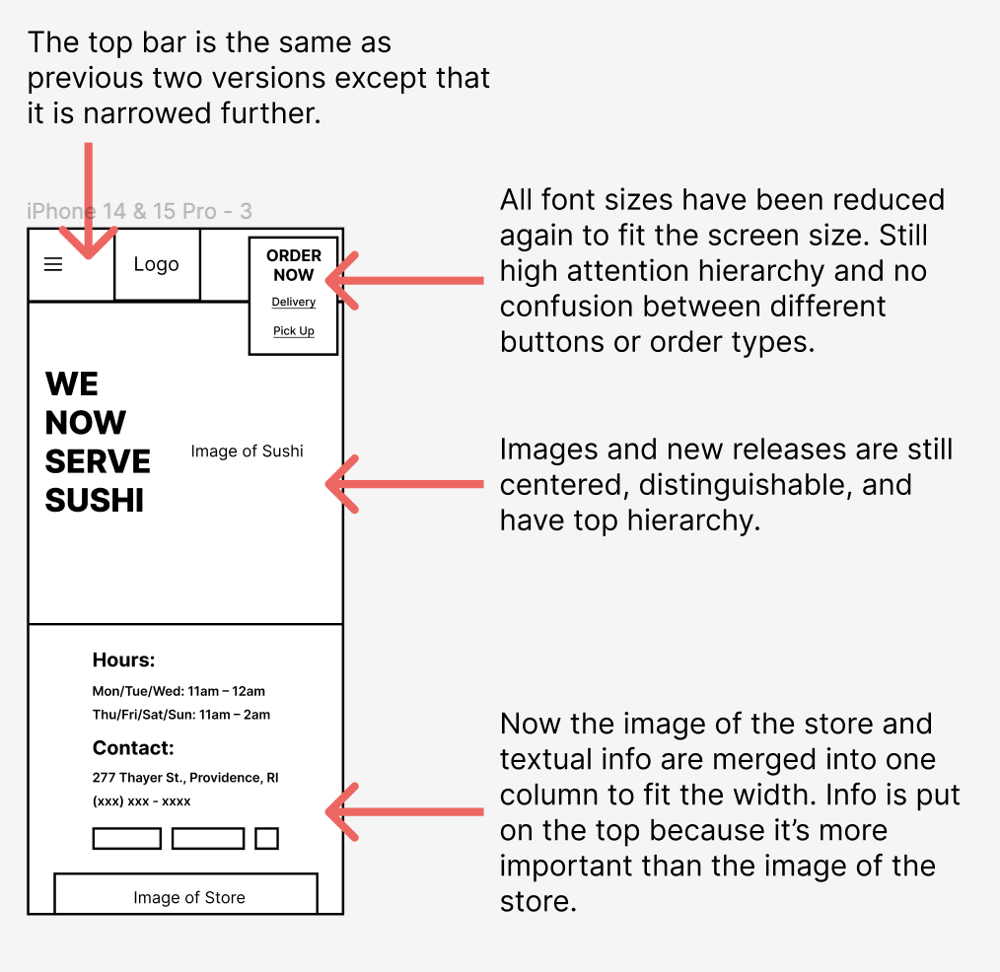
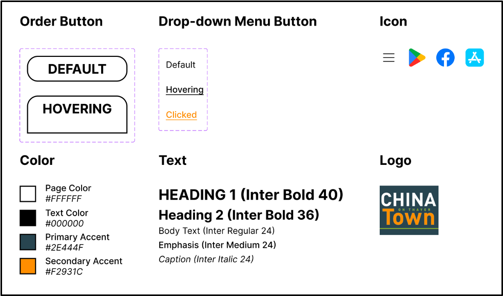
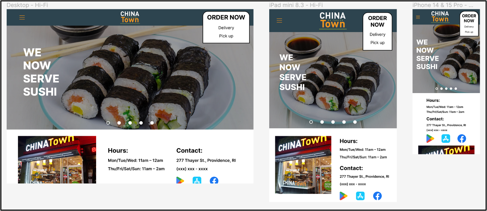

Part 1: Identifying Usability Problems
Reasons to pick this page:
Chinatown is one of my favorite restaurants.
I chose this website because it's chaotic and confusing at first glance.
Meanwhile, this page is also highly interactive.
So I think there can be many aspects to work on and it will be a valuable attempt.

Finding Problems:
Efficiency: The efficiency of this webpage is mediocre. As the official website of the restaurant, its primary functionality to frequent users is online ordering and new dish releases. While these functionalities are highlighted and were intentionally designed to capture attention, the interaction process is not ideal.
1. There are multiple buttons that lead to the same online ordering page, which can be confusing even for frequent users. And when pressing these buttons, it leads to an ordering page built within a unpopular third-party platform rather than a widely-used one like Doordash. The users have to log in to this third-party platform to order the food.
2. Newly released dishes are highlighted and centered (“WE NOW SERVE SUSHI”). But it’s styled like a button and it’s actually just a text block and not clickable. Users don’t have a place to view further information or images about the newly released dishes.
Learnability: Learnability is the biggest issue with this page. Its chaotic layout is extremely not friendly for new users. Primarily, the problems lay in its bad affordance and attention hierarchy.
1. As mentioned above, the buttons and highlights are very poorly organized, which leads to low affordance. The two buttons labeled “ONLINE ORDERING” and “ORDER ONLINE!” actually lead to the exactly same page, and they can be easily confused with another button “ORDER DELIVERY”, while the former two means order a pickup and the latter one means the delivery order. Also, we see “WE NOW SERVE SUSHI”, “WE DELIVER”, “ORDER ONLINE!”, and “ORDER DELIVERY” use the same style despite different colors, but actually only the latter two are buttons and the former two are just highlighted text blocks. These designs are counterintuitive and not user-friendly.
2. The page is full of images, colors, different shapes, and grouping, but they are not organized nicely so the attention hierarchy is chaotic. While the address and pictures of the dishes in the center definitely capture users’ first attention, the upper buttons, the logo, and social media links are all attention-capturing and can be very frustrating to navigate through.
Memorability: For the same reasons mentioned above, problems such as button links, styles, layout, etc. also make it less memorable for casual users. Especially the fact that the button-like text blocks are live-updating, it’s likely to be difficult to use for a casual user returning to this page because of not knowing where to click.
Conceptual model: Although the issues are obvious, the builder of the webpage still knows which parts are important and the need to emphasize them. Which means they do have clear intentions and implications in their conceptual model. The problem is because of the poor design, the conceptual model is completely mismatched with the users’ mental model.
Accessibility:
WebAIM WAVE mainly suggests contrast errors, which I do agree mostly, especially the text with rectangle solid color blocks. There is an orange title on a white background below which is also suggested as a contrast error, but I think it looks ok. It’s also alerting the redundant link issue as I mentioned above.

Part 2: Visual Redesign
Speed sketching:
To let the redesign solve identified problems, I first brainstormed possible frames.

Final sketch:
Then I combined the advantages of various ideas during the last phase and drew a final sketch.

Low-fidelity wireframing:
Based on the sketch, I created the different device sizes LoFi wireframes.
Desktop:

Tablet:

Mobile:

Visual Design Style Guide:
The visual style guide is largely decided based on the original designs of the restaurant (e.g. their logo, theme color, etc.)
But the number of colors and fonts is reduced and icons are unified to enhance user experience.

High-Fidelity Mockup:
Combining the style guide and previous wireframes, HiFi mockups are created. These are the final reference for the webpage development process.

Part 4: Conclusions & Takeaways
Through this redesign, I gained valuable experience in applying design principles.
Despite having a reference, building the page from scratch was a rewarding journey.
- Transforming a design concept into a tangible product always creates unexpected challenges.
- Responsive features are necessary.
- The aesthetic is the least priority.
- Start building early so that issues will be found early too.